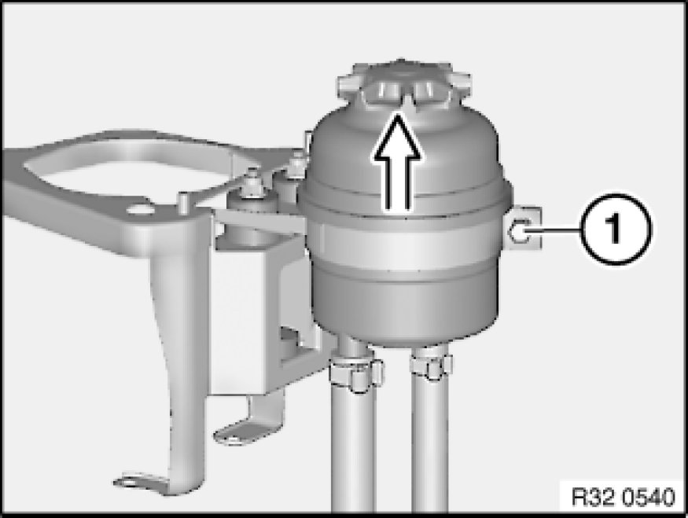

Power Steering Fluid Reservoir: Service and Repair
32 41 250 - Removing and installing/replacing fluid reservoir for power steering

Special tools required:
- 32 1 260 32 1 260 Pliers

Warning!
Danger of poisoning 00 .. ... Danger of Poisoning If Oil Is Ingested/Absorbed Through the Skin if oil is ingested/absorbed through the skin!
Risk of injury 00 .. ... Risk of Injury If Oil Comes Into Contact With Eyes and Skin if oil comes into contact with eyes and skin!
Important!
Adhere to the utmost cleanliness. Do not allow any dirt to enter the hydraulic system.
Close off pipe connections with plugs.

Recycling:
Catch and dispose of hydraulic fluid in a suitable container.
Observe country-specific waste-disposal regulations

Necessary preliminary tasks:
- Draw off and dispose of hydraulic fluid from fluid reservoir
- M54, N52: Remove intake filter housing Service and Repair
- N46: Remove intake duct

N52:
Important!
Cover alternator with a suitable covering to prevent ingress of hydraulic fluid.

Release screw (1).
Tightening torque 32 41 9AZ Pump and Oil Supply.
Remove hose clamps if necessary with special tool 32 1 260 32 1 260 Pliers.
Note:
If necessary, raise and/or turn fluid reservoir in order to gain better access to hose clamps.
Disconnect suction line and radiator return line from fluid reservoir.
Lift out fluid reservoir.
After installation:
- Fill and bleed hydraulic system Service and Repair
- Check pipe connections for leaks